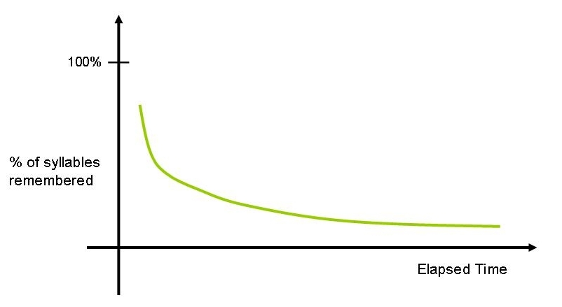

第 2 章
遗忘的优雅曲线
一人坐在巴黎旧书摊前，翻开一本旧书，看见一条曲线——这个画面本身就像某种关于记忆的寓言。书页泛黄，曲线光滑，旁边是费希纳的名字。那条线描述的是物理刺激和心理感受之间的关系：刺激翻倍

，感觉并不翻倍。对数关系。
读到这里，这个三十出头的德国人没有像大多数读者那样翻过去。他停住了。他脑子里冒出来的问题拐了一个弯：感觉是当下一瞬间的事。感觉消失之后呢？那些曾经被感受到的东西去了哪里？怎么去的？去得多快？
这个人叫赫尔曼·艾宾浩斯。他没有教职，没有实验室，没有研究团队。他口袋里有一点点钱，脑子里有一个在当时听起来近乎荒谬的念头：他要测量记忆本身。
这不是一个显而易见的决定。十九世纪末的记忆是什么？是哲学家的话题。柏拉图说记忆是蜡板，亚里士多德谈联想律，洛克讲观念的联系。两千年来，人们用比喻包围记忆，没有一个比喻涉及数字。记忆属于心灵，心灵不可量化——这是共识，厚得像教堂的墙。艾宾浩斯要做的事，等于在墙上凿洞。他需要材料。现有的记忆材料太脏了。
一首诗带着韵律，一段历史裹着意义，一张面孔连着情绪，一个地名沾着某次旅行的气味。这些东西本身就是变量，会干扰他想要测量的那个东西——如果“记忆本身”真的存在的话。他得把它分离出来，像化学家从混合物中提取纯物质。
他发明了无意义音节。规则很简单：一个元音夹在两个辅音之间。ZOK。BAF。TUW。DEG。PIB。它们看起来像词，但什么都不是。不指代任何对象，不触发任何联想，不押韵，不构成句子。它们是记忆研究史上的第一份蒸馏水——无色，无味，无菌。他造了两千三百个这样的音节，抄在小纸片上，打乱，随机抽取出长度不等的列表。
然后他开始背。一个人。在巴黎租来的屋子里，后来回到柏林，在自己家的书房。桌上三样东西：音节列表，节拍器，怀表。节拍器每秒钟敲一百五十下，他跟着节奏一个音节一个音节读下去。读完一遍，试着回忆。忘了，再读一遍。再试。直到能完整无误地背出整张列表，他记下重学的次数。然后把这张列表放到一边。
等二十分钟，一小时，八小时，一天，两天，一周，一个月。到了预定的时间点，拿出同一张列表，重新背到完全正确。再记下这一次需要重学的次数。两个数字一减，就是他在这段时间内“省下”的学习量。省得越多，忘得越少。省得越少，忘得越多。
这个方法干净到了冷酷的地步。他不问自己“我觉得记住了多少”——主观感受被整个排除在测量之外。他只看行为：重学需要多少次，时间间隔是多少，节省量是多少。内省是哲学家的工具，他要的是数字。
他在自己身上跑了数以千计的试验。1879年到1880年，第一段密集测量。1884年到1885年，第二段，补测更长时间间隔的数据。前后持续将近六年。六年里他对节拍器念了成千上万个ZOK和BAF，记下密密麻麻的数列。
1885年，《论记忆》出版。一本不到两百页的小书，没有致谢，没有合作者，没有机构署名。语气平静，措辞谨慎，几乎不像是在宣布一门新科学的诞生。但它就是。书里有一张表。横轴是时间间隔，从二十分钟拉到三十一天。
纵轴是节省量，用百分比表示。数字是这样落的：二十分钟后，节省量百分之五十八；一小时，百分之四十四；八到九小时，百分之三十五；一天，百分之三十三；两天，百分之二十七；六天，百分之二十五；三十一天，百分之二十一。
把这些数字连成线，你会看到一条优雅的曲线。开头很陡，然后迅速变缓，最后几乎平着走。头一个小时丢掉的东西，比接下来整一周丢掉的还多。头一天流失的量，比后面三十天加起来的还大。
这就是遗忘曲线。优雅在它的形状——不是笔直坠落，不是杂乱波动，而是一条平滑的、可以用数学函数描述的衰减轨迹。艾宾浩斯用对数函数拟合了它，发现它大致符合一个幂律：遗忘的速度和时间的对数成正比。
两千年来，所有人都知道人会忘事。艾宾浩斯第一次告诉你，忘的速度是可以算的。学完一小时，大概已经丢了超过一半。一天之后，丢了三分之二。
但好消息藏在曲线的右半段：剩下的那三分之一不会那么快消失。它待在那儿，缓慢地、稳定地待在那儿。这条曲线后来被重复验证了无数次。
这条曲线背后藏着一个理解记忆的默认模式，它太自然了，自然到你不会觉得它是一个隐喻。你会觉得它就是事实本身。这个模式是：记忆是一个储存罐。你往罐子里放东西。它会漏。漏的速度先快后慢。你能做的就是趁它还没漏光之前多往里倒几次——复习。复习得越多，罐底越厚，漏得越慢。遗忘是罐子的裂缝，是需要修补的缺陷，是系统运转失败的信号。这个隐喻支配了此后一百多年的记忆研究，也支配了普通人谈论自己记性时的语言。“我记性不好”——这话的意思永远是“我的罐子漏得太快”。没人会说“我的记忆编辑功能太激进”，哪怕后者可能更接近真相。
艾宾浩斯的方法论决定了他的发现边界。他要测量“纯粹的”记忆，所以他把意义、情境、情感、故事全部剥离了。他得到了一条干净的曲线，但他付出的代价是：这条曲线描述的是一个人在不带任何意义的世界里记忆无意义材料的规律。
而真实世界的记忆不是这样的。你记得的不是ZOK和BAF。你记得的是你孩子第一声笑的时候屋里光线的角度，是你十八岁那年夏天暴雨前空气里的土腥味，是你母亲做那道菜时灶台上蒸汽的节奏，是一个朋友说某句话时嘴角那个你自己都没意识到你记住了的弧度。这些东西裹着情感，嵌在故事里，连着其他记忆，被反复讲述、修改、加固、挪位。它们不是储存在罐子里的液体，不会简单地随时间匀速渗漏。
这里就逼出了一个在艾宾浩斯的框架里无法回答的问题：遗忘真的只是被动衰减吗？换一个角度来想这件事。假设有一个人的记忆系统完全按照储存罐隐喻的期望运转——记住一切，永不遗忘。这个人会过得怎么样？苏联神经心理学家亚历山大·卢里亚记录过一个著名的案例。
舍列舍夫斯基的记忆能力几乎没有上限：他能记住几十年前听过的无意义音节列表，能复述完全不懂的复杂数学公式，能在十五年之后准确回忆出一张单词表上的每一个词，包括当时实验员穿什么颜色的衣服。这听起来像超能力。
但它的后果是灾难性的。舍列舍夫斯基无法理解抽象概念。他记不住人脸，因为面孔的表情变化太快，每一次变化都在他脑中凝固成一幅全新的、不可磨灭的图像，堆积在一起，令他无法提取出一个稳定的“面容”。他读不了小说，因为每一个句子都在他脑中炸开一片具体的感官联想，这些画面互相干扰，让他追不上情节。他几乎不能进行正常的对话——对方说的每一个词都在他脑子里触发一个无法关闭的具体场景，他来不及处理完第一句，第二句已经来了。他终身困在细节的洪流里。
这个案例指向一个反直觉的判断：遗忘不是记忆系统的缺陷，它是记忆系统高效运转的前提。
你的大脑每一秒都在接收海量信息。光是此刻——你坐在这里，皮肤接触椅面的压力，背景里某种电器的低频嗡鸣，窗外光线的色温，刚才在脑子里一闪而过的那个没来得及成形就消散了的念头，胃里轻微的饱胀感，右肩比左肩略高一点的身体姿态。如果这些全部被精确编码并永久保存，你的大脑会在几分钟之内被无关信息淹没到完全瘫痪。你需要遗忘。就像你需要呼吸一样。
遗忘是一种过滤机制。它帮你筛掉那些不重要的，留下那些可能重要的。它不是罐子的裂缝，它是编辑的剪刀。编辑的工作不是保存每一个字，是删掉百分之九十，让剩下的百分之十能被找到。
艾宾浩斯的曲线描述了这个过滤过程的时间特征：刚学完的时候，系统还来不及判断哪些该留哪些该丢，大量信息处于“待筛选”状态。这时候遗忘最快——准确地说不是遗忘最快，是筛选最快。一旦筛选完成，那些被判定为“可能重要”的信息得到保留，遗忘速度就急剧下降。注意我的措辞：“被判定为可能重要”。这不是一个随机的过程。
你的记忆系统不是闭着眼睛乱扔东西的。它在进化压力下被塑造成了一个精明的过滤器。它的过滤标准可以大致概括为一行字：这件事对我的未来生存有没有用？
这就是本书要引入的一个概念——未来锚定。记忆系统的首要任务不是忠实地记录过去。是帮你在未来活得更好。每一次编码、每一次巩固、每一次回忆，都在以“未来可能用得上”为标准进行筛选和重组。遗忘是这个筛选机制最直观的表现形式。
从这个角度再看艾宾浩斯那条优雅的曲线，它就不再是“记忆衰减曲线”。它是“记忆筛选曲线”。它揭示的不是大脑的失败，是大脑的效率。不是罐子漏了，是编辑在干活。
但我必须立即划一条边界。我说遗忘有适应价值，不等同于说所有遗忘都是好的。考试前背的东西第二天全部清空，这不叫适应，这叫编码失败或者提取受阻。创伤幸存者无法回忆关键事件细节，这也不是适应，这是记忆系统在极端压力下的异常反应——形成机制完全不同，不能用同一条曲线描述，也不能用同一个“适应”标签简单打发。
适应价值是一个进化框架下的功能性判断，不是对每个具体遗忘事件的评价。把这两件事混在一起，等于拿进化论给每一次感冒开脱。同样，我说艾宾浩斯的框架有局限，不等于说他的发现是错的。他的曲线是对的——在它所描述的范围内。问题恰恰出在范围本身。
无意义音节测出来的规律，能不能推广到有意义的故事？能不能推广到带有强烈情感的事件？能不能推广到被反复讲述、每次讲述都是一次轻微改写的共同记忆？这些问题的答案，在艾宾浩斯的时代还没有人知道。
但线索已经埋在了他自己的书里。《论记忆》有一段话，后来被引用得不多，但它极为重要。艾宾浩斯写，他的方法只适用于测量“再现”——也就是主动回忆。但还有另一种记忆形式，他称之为“再认”：你看到某个东西时知道以前见过它。再认的规律可能和再现完全不同。他甚至推测，再认可能比再现更持久，更不容易受时间影响。
这个推测后来被完全证实了。再认确实比再现稳定得多。你忘了老同学的名字——再现失败。但看到照片你能立刻认出他——再认成功。
这两条遗忘曲线形状不同，衰减速度不同，神经基础也不同。无线索的自由回忆和有线索引发的再认，是两套运作逻辑。但艾宾浩斯没有继续追究这个区别。他的整个体系建立在再现的测量上：让你凭空回忆一串无意义音节。
而真实世界的记忆使用，大量依赖再认和线索提示。你走在街上，路过一家店，想起上次在这里吃过饭——这是外部线索触发的。警察给目击者看一排照片，目击者从中指认嫌疑人——这是再认，不是自由回忆。这些情境下的遗忘轨迹，和一个人在空屋子里凭空默写音节列表，完全不是一回事。
这就引出了艾宾浩斯方法论的第二个局限：他测量的是一种剥离了所有情境线索的、纯粹靠内部驱动、无线索支持的回忆。而人类记忆在自然状态下的运转，几乎永远有外部线索参与。气味把你拉回童年厨房。一首歌把你推回某年夏天的站台。一段文字让你想起另一本十年前读过的书里的句子。记忆从来不是孤立的储存单元，它是一张网上的节点，牵一个动一片。艾宾浩斯知道这一点。
正因为他知道，他才选择无意义音节来切断这张网——让每一个音节尽量不和任何东西发生关联。他要的是纯净的、原子化的记忆单位，彼此独立，互不沾染。这个选择在方法论上是天才的。没有它，测量根本不可能开始。但它同时也意味着，他的曲线描述的是一个在自然界中几乎不存在的情况：一个人试图记住一些对他来说毫无意义、毫无关联、毫无用途的东西。
而真实世界的记忆恰好相反。有意义。有关联。有用途。当记忆重新回到充满意义和故事的世界时，这条优雅的曲线还能不能说清楚它？
先看一组数据。艾宾浩斯用无意义音节测出的遗忘曲线，在后来的研究中被反复验证——但验证的范围始终局限在无意义材料或孤立事实上。一旦换成有意义的故事、图片、个人经历，曲线的形状就开始变形。
有意义材料的遗忘速度明显更慢，而且曲线往往不是艾宾浩斯式的单调下降——有时会出现“记忆回升”现象，间隔一段时间之后的回忆成绩反而比刚学完时更好。这在无意义音节的实验中几乎从未出现过。
更重要的是，有意义材料的遗忘过程不是被动衰减，是主动重组。你记住的不是原材料本身，是你对材料的理解。你的大脑在编码的时候就已经在加工了：提取要点，建立关联，填入已知框架，丢弃与框架不符的细部。这不是记忆之后的“遗忘”，这是记忆本身的构造方式。
艾宾浩斯的框架抓不住这一层。因为他把记忆当成储存罐，所以他只能看见“装进去多少”和“漏出来多少”——量的维度。他看不见的是：装进去的东西在罐子里一直在变——质的维度。每个记忆都在被不断重写，有时连你自己都不知道这次提取的版本和上一次有什么不同。你以为你打开的是档案柜，其实你走进的是排练厅。
这就是为什么，在艾宾浩斯之后不到五十年，另一个人会用完全不同的方法重新打开记忆研究的大门。这个人不关心无意义音节。他关心故事、传说、谣言——那些在人群中被反复讲述的记忆材料。他叫弗雷德里克·巴特利特。
巴特利特在剑桥做了一组实验，方法简单到不像实验：他让被试读一个北美印第安民间故事，然后隔一段时间让他们复述。
他记录每一次复述的版本，比较它们和原文的差异。他发现的东西，和艾宾浩斯的曲线形成了尖锐的对照。艾宾浩斯的曲线说：信息随时间衰减，先快后慢。
巴特利特的复述记录说：信息不是衰减，它在变形。每一次复述都在改写。细节被省略，陌生的成分被替换成本文化熟悉的，不合逻辑的情节被理顺，整个故事在被试的嘴里逐渐变成“他们认为这个故事应该有的样子”。
遗忘不是漏掉。是改写。这不是对艾宾浩斯的否定。是对他的补充，而且是关键性的补充。
艾宾浩斯测量了量的变化，巴特利特揭示了质的变化。两条线索合在一起，才构成记忆研究的完整地基：记忆既会随时间丢失信息，也会在每次提取时重新构造信息。两个过程同时发生，互相缠绕，不可分割。
但那是接下来的内容了。在这堂课结束之前，我想回到那条优雅的曲线本身，做一个最后观察。
艾宾浩斯画出这条曲线之后的一百多年里，无数人试图找到“克服”遗忘的方法。间隔复习，过度学习，精细加工，记忆宫殿——每一种都有效，但没有一种能让曲线变成水平的。
遗忘永远在发生，就像心脏永远在跳。这不是失败。这是设计。你的记忆系统不是一台为永恒而造的机器。它是为当下和未来而造的。它不断丢弃、筛选、重组，为的是让你在面对下一个决定的时候，不被上一个世纪的无关信息压垮。那条优雅的曲线画出的不是记忆的弱点，是记忆的智慧。
但它也画出了一条边界。边界这边，是剥离了意义的、在实验室里被精确测量的“纯粹”记忆，遵循着一条先陡后平的遗忘轨迹。边界那边，是裹着情感、嵌在故事里、每次讲述都在扭动的真实记忆——它拒绝被简化为一条衰减函数，因为在它内部，遗忘和改写从来不是两个分开的步骤，而是同一双手的两只手掌，合在一起，每一次都在重新塑形。
跨过这条边界，你就必须面对一个更棘手的问题：如果记忆不只是被动遗忘，而是主动改写——那么，每一次你回忆一件事的时候，你到底是在提取它，还是在重写它？你信誓旦旦确认的情节，有多少来自当年的那个时刻，有多少来自此后每一次回忆时无声渗入的新材料？
这个问题指向的，正是法庭上那些确信自己记得凶手面孔的目击者。也指向每一个对自己的童年记忆深信不疑的人。也指向你——指向你此刻正试图回忆的某个场景、某句话、某张脸。那条优雅的曲线躺在1885年的纸页上，只回答了记忆的“量”去了哪里。它没有回答“质”变成了什么。要回答这个问题，我们需要一个不同的实验，一个不同的故事，一个不同的心理学家。